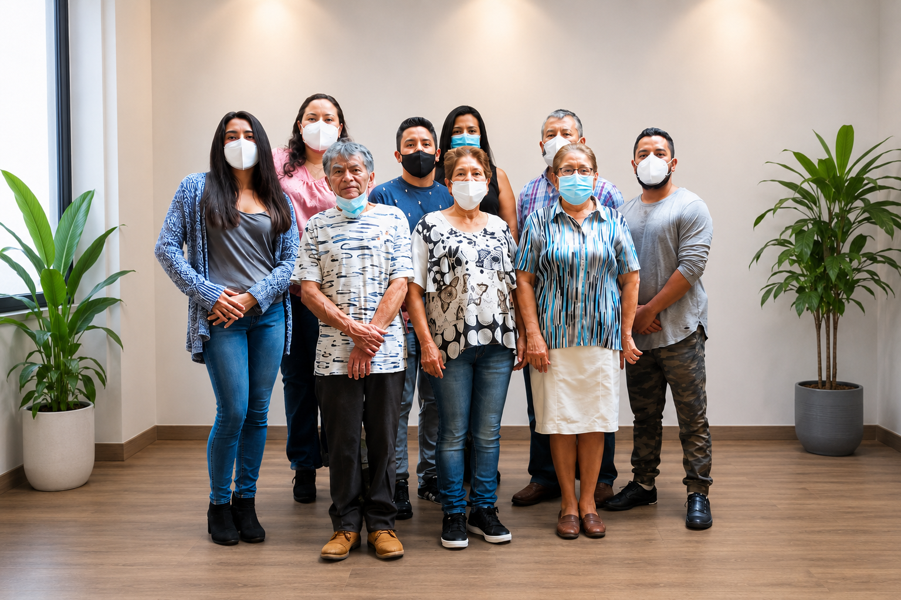
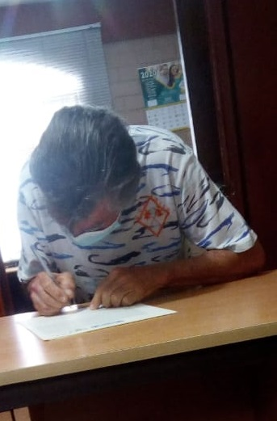
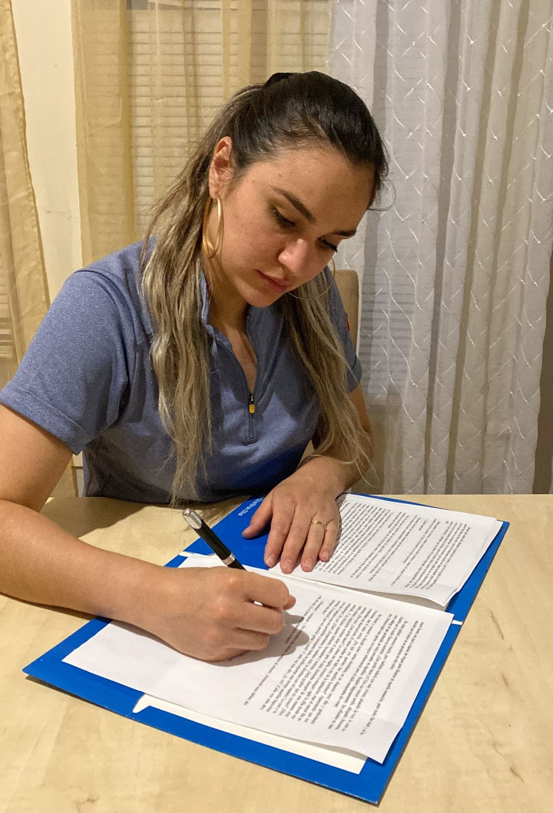
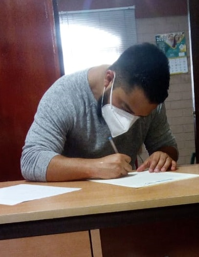
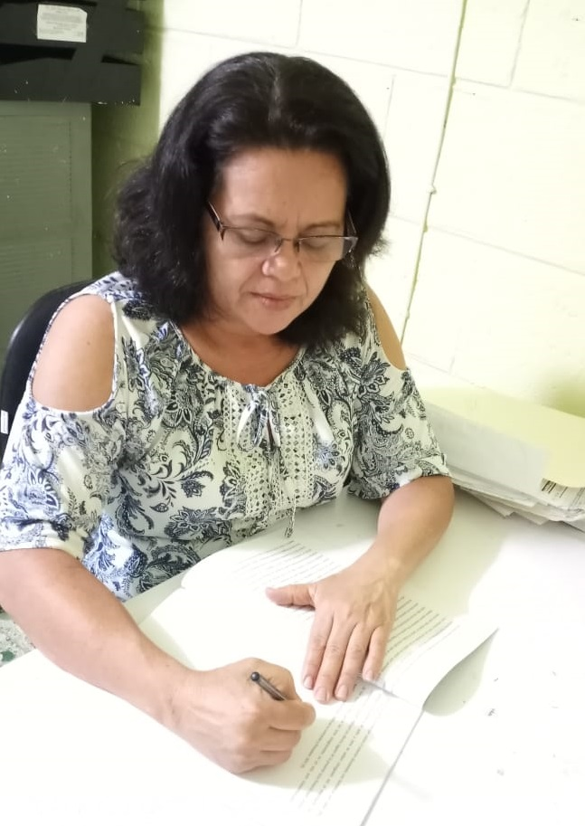

Entre los miembros fundadores se encuentran profesionales en Licenciatura en administración de empresas, Psicología, Relaciones internacionales, Contaduría pública, Ingeniería en alimentos, Maestros de Música, Artistas (cantantes , músicos, percusionistas, coreógrafos),Presentadores, Animadores de Radio y Televisión, Técnicos de grabación de audio, Tapicero con mano calificada, decoradores de moda, aportando su experiencia en la Consultoría y asesoría en programas gubernamentales que han desarrollado, implementado y ampliado proyectos con organismos nacionales e internacionales, facilitando la instructoria de capacitaciones en el área de género, emprendedurismo, fortalecimiento organizacional y gobernabilidad ciudadana, así como facilitando la modalidad de empresa centro y desarrollando proyectos con cooperativas y ADESCOS, brindando atención Psicológica, asesorando y dando consultoría para la creación y administración de organizaciones, formulando, evaluando y gestionando proyectos de cooperación nacional e internacional, organizando espectáculos artísticos, sirviendo de Manager para artistas Salvadoreños y extranjeros, contribuyendo a presentar propuestas para la creación de la ley de cultura de El salvador, reformas fiscales y migratorias relacionada a la labor artística, con conocimiento de formulación y etiquetado nutricional de alimentos, sistemas de inocuidad alimentaria y su aplicación en la industria en laboratorios de control de calidad de alimentos y exportación de los mismos al mercado nostálgicos de Estados Unidos y España, atención al cliente, Ventas, Costuras en serie, a la medida y modificación de piezas, empaques de alimentos representación artística y ventas, gestión de visitas a potenciales clientes, ordenamiento y seguimiento en base de datos de clientes, gestión de cobros ,expedición de pasaportes, DUI y servicios varios en oficinas gubernamentales, contabilidad, auditorias fiscales y financieras de pequeñas y medianas empresas, control de archivo de afiliados en sindicato, organización de todo tipo de eventos: cabalgatas artísticas, sociales, cumpleaños, bodas, oficiales, presentación de productos farmacéuticos, eventos navideños, con interpretación de música tropical, bossa, balada (inglés, español y Portugués), apoyo logístico en la creación de instituciones y sus diferentes tramites. Experiencia el área de comunicaciones y logística de eventos oficiales, con especialización en Sistemas de gestión de calidad ISO 9001-2008 aplicado a la empresa como estrategia competitiva y certificación como auditor interno de calidad ISO 9001, servicio al cliente, contabilidad registrada en El Salvador y Estados Unidos, dominio del inglés, con fundamentos de auxiliar administrativos y secretariales ,con certificado para construir equipos de trabajo.

Rosa Melba Majano Melgar
Licenciada en Administración de empresas

Gonzalo Flores Hidalgo
Tapicero Calificado

Melba Andrea Flores Majano
Diseñadora de Modas

Lorena Batriz Rivera Molina
Licenciada en Psicología

Erick Daniel Rivera Molina
Licenciado en Relaciones Internacionales

Samuel Alessandro Rivera Molina
Músico y Productor

María Dolores Calles López
Licenciada en Contaduría Pública

Kathia del Rocío Serrano Calles
Licenciada en Contaduría Pública

Jocelyn Esmeralda Méndez Calles
Ingeniera en Alimentos

Telma Edith Bautista Menjivar
Artista, Organizadora de Eventos

Manuel de Jesús Álvares Manzano
Comerciante